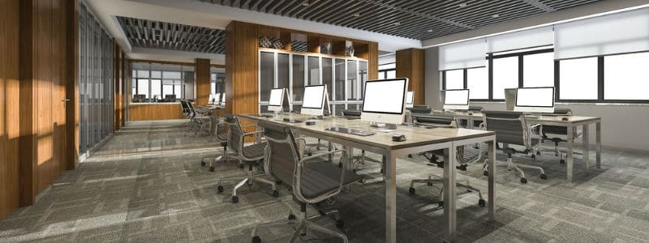

Extended Services Provided
We Cover Almost Everything!
Ultra Cleaning Solutions (UCS) offers multiple services designed to provide businesses and facility staff the highest quality service in the industry. The advent of cubicles and workstations means that fabric can cover many businesses from floor to ceiling.
Carpets
Our carpet cleaning process utilizes extremely high water temperature to break down dirt, debris, grease and grime. It is then followed by our powerful vacuum system that captures 99.99% of debris. It has the ability to remove more stains, dirt, and residue than any other vacuum system.
Surfaces and Furniture
It's no question, desk chairs, sofas, partitions and other upholstered furniture in a business environment receive a lot of use. Where there is not a carpeted floor, there is a hard floor. A common misconception is that hard floor does not need any maintenance at all but that is far from the truth. If simple maintenance steps are not taken with these floors, a simple recommended maintenance may turn into a complete repair!
We'll Work With You
Upon request, we will analyze your facility and determine the best cleaning schedule to keep your carpet, floors and furniture looking new. Working with you, we will identify heavy, moderate and light traffic areas, and design a program that makes your entire office or facility a cleaner, healthier, happier place to work.
